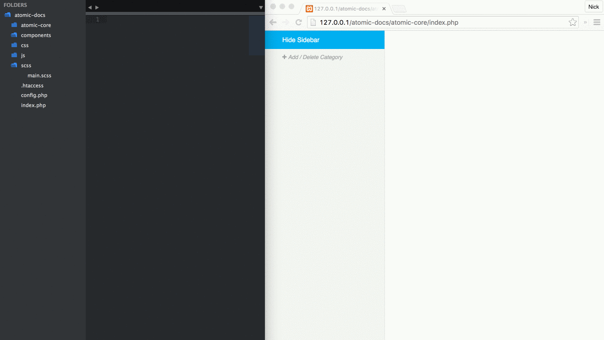

Super Test
It's expected that you'll use the PHP version of Pattern Lab locally on your computer to develop your atoms, molecules, organisms, templates and pages. To use the basic features of Pattern Lab, you must have PHP 5.3+ installed. If you're using Mac OS X you shouldn't have to install anything and Pattern Lab should work "out of the box." If you're on Windows you can download PHP from PHP.net.
